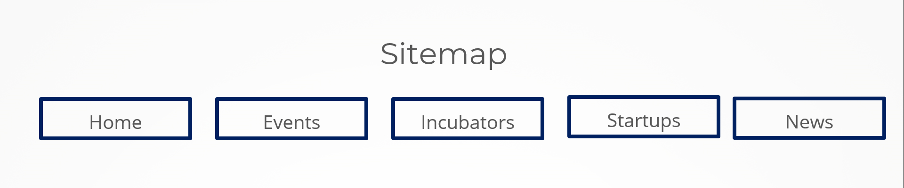
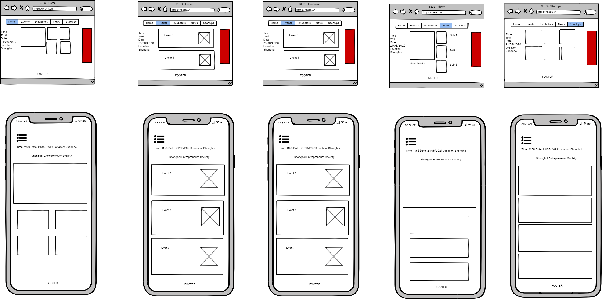

Andrew Hoban - Webdev Spring 2020 - Final Project
Introduction: What is the essential story being told by your site and what type of structure
did you choose to implement.
This website is a portal for members of the entrepreneurs community in Shanghai to
find news items and advertisements related to being a startup generally and especially
in Shanghai. The website shows startup related news, startup pitches, incubators in
East China and also some local events.
Inspiration
State 3 things that have inspired you when creating your website. These could include
guest speakers, other websites, artists, developers etc.
I am a startup founder myself in Shanghai and so decided to create something that I was
familiar with.
- Wehustle is a startup support platform in Shanghai. They
do promote events and jobs already. My idea was to create something performing
a similar function but with different content.
- I browsed bootsnipp in the beginning when I was considering how to structure the individual pages
to see the different ways I could present the content on the page.
- My third inspiration is my regular work. I am a product owner at a startup
company and I have seen a lot of waste going into development from
developers over-engineering sections of apps or websites for no improvement in usability.
I elected to keep the code as simple as possible
while still adding enough to show that I am able to use everything that was
taught in the course.
Accessibility
State 3 ways in which your site is accessible.
- All images have alt text
- All content is easily accesible in the body. Users can tab through to anything
- Strong contrast used throughout for users with visual impairments
Usability
State 3 ways in which you have considered usability in your site.
- Responsiveness: The website configuration changes according to screen size.
Font sizes change, sections redistribute or are hidden as the screen becomes smaller.
The nav bar collapses into a hamburger menu when being viewed on mobile so as to free up
that valuable space.
- Shadows: When mousing over an item, often there is a significant change in the shadowed edges.
This is to improve the feeling of the buttons and let the user know that this item is clickable.
- I kept one content type per pages (ie. cards, videos, news thumbnails). This makes the site easy to understand and use.
Learnings
State 3 things you had to learn/find out by yourself when creating your site, and describe
how you did that (i.e. what searches you did, any new tools/techniques you learned, any
changes/adaptations you made to a particular resource to make it work with your site).
- Bootstrap: I used the https://getbootstrap.com/docs/4.0/utilities documnetation extensively.
Apart from using bootstrap to organize columns, and handle the collapsing navbar, I also used it to style
sections, apply padding,
change positioning, set display to flex, justify contents etc. I began by searching for the shorthand
classes such as px-1 or d-none when trying to undersand what I was seeing in items on bootsnipp.
That opened the door for me to all the bootstrap properties. After that I used them to solve most
positioning problems.
It was extremely useful.
- I learned the right way to use Ajax to make asynchronous requests. I had originally wanted to make
a http GET request and use the response to set a variable, and finally to use that variable in a
partial. After reading more about it, I saw that I should actually be using the result of the
request to modify the website section directly. That meant I had to restructure my code a bit
and ended up filling in the partial template inside ajax function. In this section of code,
I also learned how to access items within a JSON.
I thought that putting a time, date and location
on the website would be a good way to practice using templates. Then, when searching how to
find location with Javascript, I came across posts on websites like stackoverflow and also some
blogs. The structure I found and chose to use had the ajax funciton so I had to read the
jQuery documnetation to understand how to use that.
- I found this resource helpful for finding ideas to
organize different pages of the website. https://bootsnipp.com/
It also uses bootstrap so it was easy to manipulate. When adapting things for my own
website, I generally changed most of the styling and of course the content itself.
I would also cut away any complexity that wasn't contributing directly to the user experience.
What went well
What aspect(s) of your work do you think worked well and why?
Keeping everything very simple was useful to me. When I made something
more complicated, I would first implement a very simple version and
increase the complexity in stages. I only hope that I am not penalized for this.
The work may look simple but that is the result of a lot of cleaning work.
It
worked very well because it made the code very easy to review when
adding detail to comments and fixing bugs. Another thing that worked well
was designing the website according to what was available, rather than
designing it and then wrestling pieces to fit in ways they were not intended.
What would I do differently
What aspect(s) of your work could be improved, and how might you do things differently
another time?
For improvement, perhaps giving areas of the website more solid borders might make it
more visually interesting. Next time, I would prefer to learn more contemporary tools
like React. I would like to use Ant Design but I didn't
because I didn't want to risk using my time for the project on learning a new framework.
References
[1] abudayah, 'Video list thumbnails' https://bootsnipp.com/snippets/6Knvr [Accessed: 21- September- 2020]
[2] leandroruel, 'Article thumbnails' https://bootsnipp.com/snippets/4G2m [Accessed: 21- September- 2020]
[3] johndrova, 'Carousel featured news bootstrap' https://bootsnipp.com/snippets/O5q0N [Accessed: 21- September-
2020]
[4] thdoan, 'How to get client's IP address using JavaScript?
' https://stackoverflow.com/questions/391979/how-to-get-clients-ip-address-using-javascript [Accessed: 21-
September- 2020]
[5] w3schools, 'w3schools reference', 2020. [Online]. Available:
https://www.w3schools.com. [Accessed: 21- September- 2020].
[6] ipstack.com, 'ipstack API', 2020. [Online]. Available:
https://ipstack.com/documentation. [Accessed: 21- September- 2020].
[7] jquery.com, 'jQuery Api', 2020. [Online]. Available:
https://api.jquery.com/. [Accessed: 21- September- 2020].
[8] Bootstrap, 'Bootstrap Reference', 2020. [Online]. Available:
https://www.getbootstrap.com. [Accessed: 21- September- 2020].
[9] popper.js, 'Popper documnetation', 2020. [Online]. Available:
https://popper.js.org/docs/v2/. [Accessed: 21- September- 2020].
[10] Handlebarsjs.com, 'Handlebars Reference', 2020. [Online]. Available:
http://handlebarsjs.com/reference.html. [Accessed: 21- September- 2020].
Appendices
Sitemap

Wireframes
Mockups